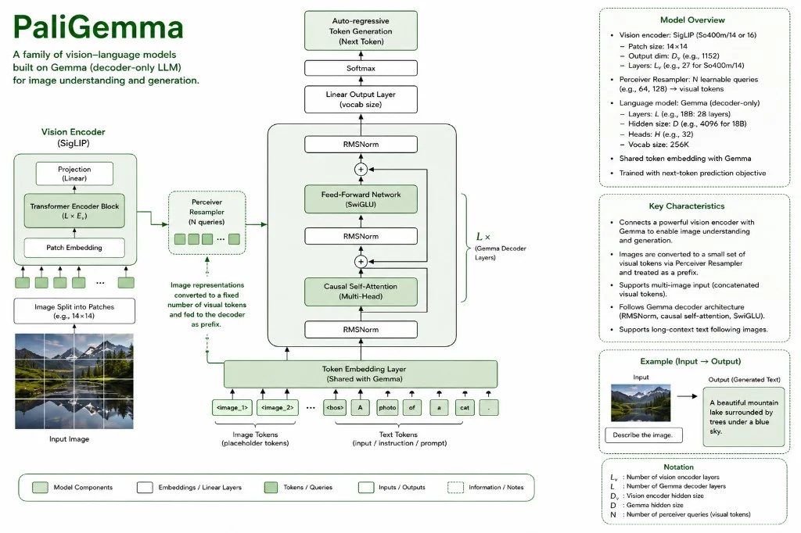

PaliGemma 3B · SigLIP-So400m/14 · LinearProjector · Gemma-2B decoder · next-token LM
PaliGemma joins two pretrained stacks: SigLIP-So400m/14 (vision) and Gemma-2B (language). Patch features are projected into Gemma’s embedding space and prepended as a visual prefix; the decoder then runs one causal forward pass over [image tokens + text] and generates captions, answers, OCR, or task-specific tokens.
Unlike CLIP, this is generative — not contrastive retrieval. The image is context, not a similarity target.
The shift from matching to generating
CLIP (stop 14) was contrastive: encode image and text separately, push matching pairs together in a shared embedding space. PaliGemma is generative: the image is processed by a vision encoder, then its patch tokens are prepended to the text sequence so a causal language model can generate tokens conditioned on what it sees.
This introduces several new design decisions: two completely independent hidden dimensions (vision vs language), a LinearProjector bridge between them, two different normalisation strategies (LayerNorm for vision, RMSNorm for language), and a SwiGLU MLP in the language decoder. The result is a model that can answer questions, caption images, and do visual QA — all through next-token prediction.
PaliGemma vs CLIP (stop 14)
- No contrastive loss, no CLS token, no L2 normalisation — generative, not matching
- SigLIP outputs all N patches; CLIP's ImageEncoder compressed to 1 vector
- LinearProjector maps vision_dmodel → gemma_dmodel across two different hidden dims
- Language decoder is a full causal LM with weight tying (lm_head ↔ wte)
- Two different norms: LayerNorm in SigLIP, RMSNorm in Gemma
- SwiGLU MLP in Gemma vs plain GELU in CLIP/SigLIP
PaliGemmaConfig — dual sub-configs in one dataclass
PaliGemmaConfig vs CLIPConfig (stop 14)
- CLIP had one
dmodelfor everything. PaliGemma hasvision_dmodel=64andgemma_dmodel=128— the two sub-models live in different spaces - Two separate head counts:
vision_H=8,gemma_H=8— dk is different for each - New property
total_seq_len = num_patches + max_text_len— the Gemma decoder operates over this combined length gemma_dffis a computed property (4 × gemma_dmodel), not a stored field
The config is a dataclass with separate vision and Gemma fields. Teaching code uses tiny tensors; production PaliGemma 1 scale is below.
PaliGemma 1 (paper scale)
VisionSigLIP-So400m/14 · patch 14 · ~400M backboneLanguageGemma-2B causal decoderTotal~3B parametersBridgeLinearProjector: vision_dim → gemma_dimResolutions224 / 448 / 896 input sizes (variants) 14@dataclass
15class PaliGemmaConfig:
16 B: int = 2 # batch size
17 dropout: float = 0.1
18 norm_eps: float = 1e-6
20 # --- SigLIP vision encoder ---
21 image_size: int = 32
22 patch_size: int = 8
23 C: int = 3
24 vision_dmodel: int = 64 # vision hidden dim
25 vision_H: int = 8 # vision heads → dk = 64/8 = 8
26 vision_N: int = 2
27 vision_dff: int = 256
29 # --- Gemma language model ---
30 vocab_size: int = 1000
31 max_text_len: int = 16
32 gemma_dmodel: int = 128 # language hidden dim — different from vision
33 gemma_H: int = 8 # language heads → dk = 128/8 = 16
34 gemma_N: int = 2
36 @property
37 def vision_dk(self):
return self.vision_dmodel // self.vision_H
40 @property
41 def gemma_dk(self):
return self.gemma_dmodel // self.gemma_H
44 @property
45 def gemma_dff(self):
return 4 * self.gemma_dmodel # SwiGLU inner dim
49 @property
50 def num_patches(self):
return (self.image_size // self.patch_size) ** 2
54 @property
55 def total_seq_len(self):
# Gemma sees: [image patches] + [text tokens]
return self.num_patches + self.max_text_lenLayerNorm — subtracts mean before scaling
LayerNorm vs CLIP's LayerNormalization (stop 14)
- Functionally identical — both compute
alpha * (x - mean) / (std + eps) + bias - CLIP used it everywhere; here it is used only in SigLIP (the vision sub-model)
- Gemma uses RMSNorm instead — see section 03
- Subtracting the mean makes outputs zero-centered, which suits vision features
Two learnable parameters: alpha (scale, initialised to ones) and bias (shift, initialised to zeros). The std is computed along the last dimension (feature axis), not batch or sequence. This is standard LayerNorm — it normalises each token's feature vector independently.
71class LayerNorm(nn.Module):
72 # z = alpha * (x - mean) / (std + eps) + bias
73 def __init__(self, dmodel, eps=1e-6):
74 super().__init__()
75 self.eps = eps
76 self.alpha = nn.Parameter(torch.ones(dmodel))
77 self.bias = nn.Parameter(torch.zeros(dmodel))
79 def forward(self, x):
80 mean = x.mean(dim=-1, keepdim=True)
81 std = x.std(dim=-1, keepdim=True)
82 return self.alpha * ((x - mean) / (std + self.eps)) + self.biasRMSNorm — faster norm without mean subtraction
RMSNorm vs LayerNorm (section 02)
- No
meansubtraction — skips the re-centering step entirely - Uses
rsqrt(reciprocal square root) — numerically more stable than dividing bysqrt - Only one learnable parameter:
weight(scale). No bias term. - Used in LLaMA, Gemma, PaLM — the standard for modern LLMs because it is faster and equally effective
The formula is x * rsqrt(mean(x²) + eps) * weight. The RMS acts as a scale normaliser: it computes how large the activations are on average and divides by that magnitude. No centering around zero is needed because modern LLMs with residual connections stay well-conditioned without it.
85class RMSNorm(nn.Module):
86 # z = x / rms(x) * weight where rms(x) = sqrt(mean(x²) + eps)
87 # rsqrt(x) = 1/sqrt(x) — more numerically stable than dividing by sqrt
88 def __init__(self, dmodel, eps=1e-6):
89 super().__init__()
90 self.eps = eps
91 self.weight = nn.Parameter(torch.ones(dmodel))
93 def forward(self, x):
95 rms = torch.rsqrt(x.pow(2).mean(dim=-1, keepdim=True) + self.eps)
96 return x * rms * self.weight # LayerNorm — centers AND scales
mean = x.mean(dim=-1, keepdim=True)
std = x.std(dim=-1, keepdim=True)
return alpha * ((x - mean) / (std + eps)) + bias
# RMSNorm — scales only, no centering
rms = torch.rsqrt(x.pow(2).mean(dim=-1, keepdim=True) + eps)
return x * rms * weightSigLIPPatchEmbedding — nn.Embedding for positions, not nn.Parameter
SigLIPPatchEmbedding vs CLIP PatchEmbedding (stop 14)
- CLIP used
nn.Parameter(torch.zeros(1, num_patches+1, dmodel))— a raw tensor - SigLIP uses
nn.Embedding(num_patches, vision_dmodel)— a lookup table, same as GPT-2'swpe - No CLS token prepended here — SigLIP does not use CLS at all
position_idsregistered as a buffer (moves to GPU, not a learnable parameter)
The patch extraction works the same as CLIP: a Conv2d with kernel_size=stride=patch_size extracts and projects each patch in one step. The result is flattened from (B, dmodel, grid_h, grid_w) to (B, num_patches, dmodel) using flatten(2).transpose(1,2). Then positional embeddings are added by indexing into an nn.Embedding with position_ids = [0, 1, ..., num_patches-1].
125class SigLIPPatchEmbedding(nn.Module):
126 # Conv2d with kernel=stride=patch_size: extracts + projects patches in one step
127 # position embedding: nn.Embedding lookup (same as GPT-2's wpe)
128 def __init__(self, config):
129 super().__init__()
130 self.patch_proj = nn.Conv2d(
131 in_channels = config.C,
132 out_channels = config.vision_dmodel,
133 kernel_size = config.patch_size,
134 stride = config.patch_size,
135 bias = False,
136 )
138 self.pos_embed = nn.Embedding(config.num_patches, config.vision_dmodel)
141 self.register_buffer(
142 "position_ids", torch.arange(config.num_patches).unsqueeze(0)
143 )
145 def forward(self, x):
147 x = self.patch_proj(x) # (B, vision_dmodel, grid_h, grid_w)
148 x = x.flatten(2) # (B, vision_dmodel, num_patches)
149 x = x.transpose(1, 2) # (B, num_patches, vision_dmodel)
151 x = x + self.pos_embed(self.position_ids) # (1, num_patches, vision_dmodel) broadcasts
152 return x # (B, num_patches, vision_dmodel)SigLIPAttention — full bidirectional attention, no mask
SigLIPAttention vs CLIP MultiHeadAttention (stop 14)
- CLIP's text tower used a causal mask; image tower had no mask but extracted the CLS token
- SigLIPAttention has no mask at all — every patch attends freely to every other patch (bidirectional)
- No CLS token to extract — all tokens flow through to the next layer
- Shape throughout:
(B, num_patches, vision_dmodel)
Standard multi-head self-attention. Q, K, V projections reshape to (B, H, S, dk), scaled dot-product scores are computed and softmaxed, then the attended values are reshaped back to (B, S, dmodel) before the output projection wo. Because this is the vision encoder, attention is bidirectional — each patch needs global context from all other patches to understand the image.
160class SigLIPAttention(nn.Module):
161 # full (bidirectional) self-attention — no causal mask
163 def __init__(self, config):
164 super().__init__()
165 self.h = config.vision_H
166 self.dk = config.vision_dk
167 self.dmodel = config.vision_dmodel
168 self.wq = nn.Linear(self.dmodel, self.dmodel)
169 self.wk = nn.Linear(self.dmodel, self.dmodel)
170 self.wv = nn.Linear(self.dmodel, self.dmodel)
171 self.wo = nn.Linear(self.dmodel, self.dmodel)
172 self.dropout = nn.Dropout(config.dropout)
174 def forward(self, x):
175 B, S, _ = x.shape
176 q = self.wq(x).view(B, S, self.h, self.dk).transpose(1, 2)
177 k = self.wk(x).view(B, S, self.dk).transpose(1, 2)
178 v = self.wv(x).view(B, S, self.dk).transpose(1, 2)
179 scores = q @ k.transpose(-1, -2) / math.sqrt(self.dk)
180 # no mask — every patch attends to every other patch
181 scores = F.softmax(scores, dim=-1)
183 out = (scores @ v).transpose(1, 2).contiguous().view(B, S, self.dmodel)
184 return self.wo(out)SigLIPFeedForward + SigLIPEncoderBlock
SigLIPFeedForward vs CLIP FeedForward (stop 14)
- Same GELU-based two-layer MLP:
dmodel → dff → GELU → dmodel - Uses
vision_dmodelandvision_dfffrom config, not a unified dmodel - SigLIPEncoderBlock uses LayerNorm for both pre-norm steps (not RMSNorm)
- Pre-norm residual pattern is identical to CLIP's TransformerBlock:
x = x + sublayer(norm(x))
The feed-forward network expands the representation from vision_dmodel=64 to vision_dff=256 (4×), applies GELU, then projects back. The encoder block wraps attention and FFN with separate LayerNorm instances (norm1, norm2) following the pre-norm residual pattern standard since LLaMA.
187class SigLIPFeedForward(nn.Module):
188 # standard GELU MLP — dmodel → dff → GELU → dmodel
190 def __init__(self, config):
191 super().__init__()
192 self.w_up = nn.Linear(config.vision_dmodel, config.vision_dff)
193 self.w_proj = nn.Linear(config.vision_dff, config.vision_dmodel)
194 self.dropout = nn.Dropout(config.dropout)
196 def forward(self, x):
197 return self.w_proj(self.dropout(F.gelu(self.w_up(x))))
200class SigLIPEncoderBlock(nn.Module):
201 # pre-norm: x = x + sublayer(norm(x))
202 # uses LayerNorm (not RMSNorm — SigLIP is a vision model)
203 def __init__(self, config):
204 super().__init__()
205 self.norm1 = LayerNorm(config.vision_dmodel, config.norm_eps)
206 self.norm2 = LayerNorm(config.vision_dmodel, config.norm_eps)
207 self.attn = SigLIPAttention(config)
208 self.ff = SigLIPFeedForward(config)
210 def forward(self, x):
211 x = x + self.attn(self.norm1(x))
212 x = x + self.ff(self.norm2(x))
213 return xSigLIPVisionEncoder — all patches kept, no pooling
SigLIPVisionEncoder vs CLIP ImageEncoder (stop 14)
- CLIP's ImageEncoder prepended a CLS token and extracted it at the end → 1 vector per image
- SigLIP has no CLS token — outputs all
num_patchestokens →(B, num_patches, vision_dmodel) - Final LayerNorm after the blocks — CLIP had a linear projection head; SigLIP just normalises
- Spatial information is fully preserved — Gemma can "look at" each patch position independently
The encoder stacks vision_N SigLIPEncoderBlocks and ends with a LayerNorm. Output shape is (B, num_patches, vision_dmodel) — all 16 patch tokens (for a 32×32 image with 8×8 patches) flow out. The LinearProjector then maps them into Gemma's space.
221class SigLIPVisionEncoder(nn.Module):
222 def __init__(self, config):
223 super().__init__()
224 self.patch_embed = SigLIPPatchEmbedding(config)
225 self.blocks = nn.ModuleList([SigLIPEncoderBlock(config) for _ in range(config.vision_N)])
226 self.norm = LayerNorm(config.vision_dmodel, config.norm_eps)
228 def forward(self, images):
229 x = self.patch_embed(images) # (B, num_patches, vision_dmodel)
230 for block in self.blocks:
231 x = block(x)
232 x = self.norm(x)
233 return x # (B, num_patches, vision_dmodel) — ALL patches keptLinearProjector — the bridge between two embedding spaces
LinearProjector — new in PaliGemma, nothing like it in CLIP
- CLIP had a single shared embedding space — no translation needed
- PaliGemma has two separate hidden dims:
vision_dmodel=64andgemma_dmodel=128 - A single
nn.Linearmaps all patch tokens from vision space to language space - No activation, no LayerNorm — just a linear map. Simple is effective here.
The projector is deliberately minimal: one nn.Linear(vision_dmodel, gemma_dmodel). It operates on the token dimension, so the sequence length stays the same: input (B, num_patches, 64) → output (B, num_patches, 128). These 128-dim patch tokens are now in the same space as Gemma's word embeddings and can be concatenated with text tokens.
254class LinearProjector(nn.Module):
255 def __init__(self, config):
256 super().__init__()
257 self.proj = nn.Linear(config.vision_dmodel, config.gemma_dmodel)
259 def forward(self, x):
260 return self.proj(x) # (B, num_patches, gemma_dmodel)At this point image patches have been fully translated into Gemma's language space. The next question is: what does Gemma look like?
GemmaSwiGLU — gated multiplicative MLP
GemmaSwiGLU vs SigLIPFeedForward (section 06)
- SigLIPFeedForward:
x → Linear → GELU → Linear → out(sequential) - SwiGLU: two parallel projections — a gate and a content path — multiplied together
- Three Linear layers (gate_proj, up_proj, down_proj) vs two in GELU FFN
- All no bias — Gemma convention, saves parameters, no loss in quality
- Used in LLaMA, Gemma, PaLM — state-of-the-art for language models
SwiGLU formula: out = down_proj( GELU(gate_proj(x)) * up_proj(x) ). The gate learns to suppress or amplify features multiplicatively — it is a soft "attention over the feature dimension". This is why SwiGLU tends to outperform plain GELU: the model has more control over which information passes through.
286class GemmaSwiGLU(nn.Module):
287 # gate = GELU(gate_proj(x)) ← activation gate
288 # up = up_proj(x) ← content
289 # out = down_proj(gate * up) ← element-wise multiply then project down
296 def __init__(self, config):
297 super().__init__()
298 self.gate_proj = nn.Linear(config.gemma_dmodel, config.gemma_dff, bias=False)
299 self.up_proj = nn.Linear(config.gemma_dmodel, config.gemma_dff, bias=False)
300 self.down_proj = nn.Linear(config.gemma_dff, config.gemma_dmodel, bias=False)
302 def forward(self, x):
303 gate = F.gelu(self.gate_proj(x), approximate="tanh")
304 up = self.up_proj(x)
305 return self.down_proj(gate * up)GemmaAttention + GemmaDecoderBlock — causal LM layers
GemmaAttention vs SigLIPAttention (section 05)
- SigLIPAttention: no mask, full attention, has bias in projections
- GemmaAttention: causal mask applied (text generation), no bias in any projection
- Uses
gemma_dmodel=128andgemma_dk=16— larger hidden dim than vision - GemmaDecoderBlock uses RMSNorm (not LayerNorm) — Gemma is an LLM, not a vision model
The attention mask is applied over the full combined sequence. The mask is registered as a buffer in GemmaDecoder, so it is sliced to [:S, :S] here where S is the current sequence length. The decoder block combines RMSNorm, GemmaAttention, and GemmaSwiGLU with the now-standard pre-norm residual structure.
308class GemmaAttention(nn.Module):
309 # causal self-attention — no bias in projections (Gemma convention)
311 def __init__(self, config):
312 super().__init__()
316 self.wq = nn.Linear(self.dmodel, self.dmodel, bias=False)
317 self.wk = nn.Linear(self.dmodel, self.dmodel, bias=False)
318 self.wv = nn.Linear(self.dmodel, self.dmodel, bias=False)
319 self.wo = nn.Linear(self.dmodel, self.dmodel, bias=False)
322 def forward(self, x, mask=None):
327 scores = q @ k.transpose(-1, -2) / math.sqrt(self.dk)
328 if mask is not None:
329 scores = scores.masked_fill(mask[:S, :S] == 0, float("-inf"))
333 return self.wo(out)
336class GemmaDecoderBlock(nn.Module):
337 # pre-norm decoder block with RMSNorm + SwiGLU
339 def __init__(self, config):
340 super().__init__()
341 self.norm1 = RMSNorm(config.gemma_dmodel, config.norm_eps)
342 self.norm2 = RMSNorm(config.gemma_dmodel, config.norm_eps)
343 self.attn = GemmaAttention(config)
344 self.mlp = GemmaSwiGLU(config)
346 def forward(self, x, mask=None):
347 x = x + self.attn(self.norm1(x), mask)
348 x = x + self.mlp(self.norm2(x))
349 return xGemmaDecoder — image-prefix causal language model
GemmaDecoder vs GPT-2 Decoder (stop 02)
- GPT-2: text tokens only →
wte + wpe → blocks → LayerNorm → lm_head - GemmaDecoder: receives projected image tokens + text tokens, concatenates them before adding positional embeddings
- Weight tying:
lm_head.weight = wte.weight— the output matrix is the transposed input embedding. Used in GPT-2, LLaMA, Gemma. - Causal mask covers the full
total_seq_len(patches + text) — text tokens cannot attend to future text, but can attend to all image tokens (they come first) - RMSNorm as final norm before lm_head (not LayerNorm)
The key forward step: torch.cat([image_tokens, text_embeds], dim=1) creates a combined sequence of length num_patches + S. Positional embeddings are added over the whole combined sequence. The causal mask is registered as a buffer of size total_seq_len × total_seq_len and sliced to [:S, :S] in each attention block for the current sequence length.
357class GemmaDecoder(nn.Module):
360 def __init__(self, config):
361 super().__init__()
362 self.wte = nn.Embedding(config.vocab_size, config.gemma_dmodel)
363 # wpe covers the full combined sequence (patches + text)
364 self.wpe = nn.Embedding(config.total_seq_len, config.gemma_dmodel)
366 self.blocks = nn.ModuleList([GemmaDecoderBlock(config) for _ in range(config.gemma_N)])
367 self.norm = RMSNorm(config.gemma_dmodel, config.norm_eps)
368 self.lm_head = nn.Linear(config.gemma_dmodel, config.vocab_size, bias=False)
372 self.lm_head.weight = self.wte.weight # weight tying
375 self.register_buffer(
377 "mask", torch.tril(torch.ones(config.total_seq_len, config.total_seq_len))
378 )
380 def forward(self, image_tokens, text_tokens):
386 text_embeds = self.wte(text_tokens) # (B, S, gemma_dmodel)
390 x = torch.cat([image_tokens, text_embeds], dim=1) # image prefix + text
393 pos = torch.arange(0, full_len, device=x.device)
395 x = self.drop(x + self.wpe(pos))
398 for block in self.blocks:
399 x = block(x, self.mask)
401 x = self.norm(x)
402 return self.lm_head(x) # (B, num_patches+S, vocab_size)PaliGemma — three-stage forward pass
PaliGemma vs CLIP (stop 14) — full model comparison
- CLIP: two separate encoders → two embeddings → contrastive loss
- PaliGemma: vision encoder → projector → language decoder → token logits
- Three sub-modules:
vision_encoder,projector,language_model - Output shape
(B, total_seq_len, vocab_size)— logits for every position - Trained with cross-entropy on the text positions (standard next-token prediction, conditioned on image prefix)
The full model is a clean three-step pipeline. Step 1: SigLIP encodes the image to patch tokens. Step 2: LinearProjector maps them into Gemma's space. Step 3: GemmaDecoder receives image tokens + text tokens, concatenates them, and predicts the next token at every position. The output at text positions contains predictions for captioning, VQA, and other vision-language tasks.
422class PaliGemma(nn.Module):
423 def __init__(self, config):
424 super().__init__()
425 self.vision_encoder = SigLIPVisionEncoder(config)
426 self.projector = LinearProjector(config)
427 self.language_model = GemmaDecoder(config)
429 def forward(self, images, text_tokens):
431 # step 1: encode all image patches with SigLIP
432 image_features = self.vision_encoder(images) # (B, num_patches, vision_dmodel)
434 # step 2: project into Gemma's embedding space
435 image_tokens = self.projector(image_features) # (B, num_patches, gemma_dmodel)
437 # step 3: Gemma generates logits over the combined sequence
438 logits = self.language_model(image_tokens, text_tokens) # (B, patches+S, vocab)
439 return logitsArchitecture comparison table
| Feature | CLIP (stop 14) | PaliGemma (stop 15) |
|---|---|---|
| Task | Contrastive matching (image ↔ text) | Generative: next-token prediction on image+text |
| Hidden dims | Single dmodel for all | Dual: vision_dmodel=64, gemma_dmodel=128 |
| Vision norm | LayerNormalization (custom, with alpha+bias) | LayerNorm (vision) / RMSNorm (language) |
| CLS token | Yes — prepended to image patches, read at end | No — all patches kept, no pooling |
| Vision output | (B, embed_dim) — 1 vector per image | (B, num_patches, vision_dmodel) — all patches |
| Bridge | None needed (shared space) | LinearProjector: vision_dmodel → gemma_dmodel |
| Language FFN | GELU two-layer MLP | SwiGLU (gated: gate_proj × up_proj → down_proj) |
| Linear bias | Yes in attention projections | No (Gemma convention) |
| Weight tying | No | Yes: lm_head.weight = wte.weight |
| Output | (B, B) similarity logits + InfoNCE loss | (B, total_seq_len, vocab_size) token logits |
| Position embed | nn.Parameter (raw tensor) | nn.Embedding (lookup table, GPT-2 style) |
Papers & technical sources
Primary reports and references for this chapter. Read these for full equations, training details, and official hyperparameters.
- PaliGemma: A versatile 3B VLM (Beyer et al., 2024)SigLIP vision encoder + Gemma decoder, prefix LM on image tokens.
- Sigmoid Loss for Language Image Pre-Training (SigLIP)Vision tower loss used in PaliGemma / SigLIP checkpoints.
- Gemma 2 technical reportLanguage backbone family PaliGemma builds on.
Comments